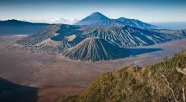
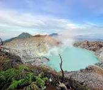
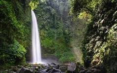

Temukan Keindahan Alam dan Budaya Indonesia
Selamat datang di website Jelajah Wisata Indonesia. Website ini berisi informasi mengenai beberapa tempat wisata menarik yang ada di Indonesia.
Indonesia memiliki banyak sekali destinasi wisata, mulai dari pegunungan, pantai, laut, hingga wisata budaya.
Berikut adalah objek wisata menarik di Jawa Timur

Gunung Bromo merupakan salah satu tempat wisata terkenal yang berada di Jawa Timur.

Kawah Ijen merupakan salah satu tempat wisata terkenal yang berada di Jawa Timur.

Air Terjun Coban Rondo merupakan salah satu tempat wisata terkenal yang berada di Jawa Timur.
Silakan dengarkan musik sambil menikmati informasi wisata Indonesia.
Silakan melihat video terkait informasi wisata Indonesia.